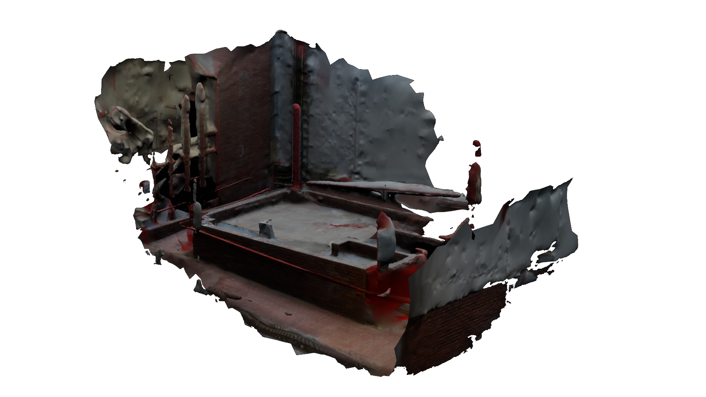

return
53°20'36.5"N 6°16'44.8"W
Video Duration: 0:40
Photogrammetry + Performance (?)
53°20'36.5"N 6°16'44.8"W is the location of a 3D recreation of a physical space known as the "atrium". To exist no longer means to be physical, but to also be digital.
